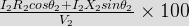
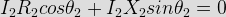
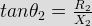
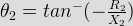
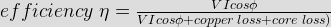
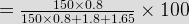

- A 800 kVA, single phase transformer has a voltage ratio of 6600/5000 volt. If Emf per turn = 8 Volt, calculate number of turns on high voltage and low voltage side.
- A 3φ 2000 kVA transformer has a voltage ratio of 6600/415 volt, and has pu value of resistance and leakage reactance are 0.02 and 0.1 respectively. Calculate full load regulation if power factor is 0.8 lagging. Given Vr = 2, Vx = 10.
% regulation = Vr cosφ + Vx sinφ = 2 X 0.8 + 10 X 0.6 = 7.6 %
- A balanced 3 φ load of 150 kW at 1000 volt and p.f 0.866, is supplied from a 2000 V source having 3 phase mains connected in delta. Calculate the primary phase current.
√3.VL.IL.cosφ = 150000 or IL = 100 Amp
Secondary phase current = IL/√3 = 57.7 Amp
Turns ratio = 1000/2000 = 1/2
Primary phase current = 57.76/2 = 28.85 Amp
i.e. option B - 2 transformers are connected in Scott connection operating from 440 volt 3 φ supplying 2 1-φ transformers on 200 volt each. If total output is 150 kVA. Then secondary to primary turns ratio of the teaser transformer is:
- The basic function of a transformer is to change
- Tappings of a step down transformer are provided at
In H.V side winding current loading is comparatively smaller than L.V side winding and high voltage winding placed at the outer level.
- In a transformer, zero voltage regulation at full load is
We know voltage regulation for lagging power factor is,

Now for voltage regulation to be zero,



So, we can see from the above equation, that &theta2 is negative which is possible when leading power factor load is applied. - In case of distribution transformer which connection is applied-
For distribution system, a neutral wire is very much required. In star connection only neutralwire is provided where line voltage is √3X(phase voltage), line current is phase current. So, in case of distribution transformer delta - star connection is applied.
- A Buchholz relay is used for
Buchholz relay protects the transformer from all internal faults.
- For large capacity transformer which core is used?
Stepped core is used in large capacity transformers to have optimum advantage of space, cost and material.
- Transformers cause transfer of energy from one circuit to another without change in
- Transformers with rating 100 MVA which cooling is preferred?
Natural radiation is preferred when transformer rating is 5KVA.
Oil filled and self-cooled is preferred when transformer rating is 5KVA to 100 MVA.
Forced cooling with air blast is preferred when transformer rating is above 100 MVA. - The oil used in the transformers serves as a
The oil used in the transformer serves in two ways.
1. It acts as a coolant.
2. It acts as an insulator.
It must be a good insulator with dielectric strength of 200KV ⁄ cm. It should not absorb moisture and dust. It must be free from acids, alcoholics and sulfur. The oil is generally used for transformer are
1. Liquid silicon.
2. Pyranol.
3. Askarul.
4. Mineral oils. - Leakage flux in a transformer depends upon
The flux set up by in the primary & seconary which is set up tn the core linking with its own turns & not linking with the other is known as leakage flux.The effect of leakage flux is to develop into their respective windings emfs of self-inductance which are proportional to load current ,and, are therefore,equivalent in effect to the addition of an inductive coil in series with each winding.So, leakage flux in a transformer depends upon load current.
- A 40KVA transformer has a core loss of 400W & full load copper loss of 80W. At Maximum efficiency percent of full load is
Pi = iron loss(core loss) = 400 Watt, Pc = 800 Watt(copper loss), maximum efficiency occurs at fraction x of full load such that x = √(Pi ⁄ Pc) = √(400/800)=0.707X100 = 70.7 % .
- AT(ampere turn) in magnetic circuit is analogous to which quantity in electric circuit
The unit of magneto-motive force (MMF) is the ampere-turn (AT). MMF in magnetic circuit is analogous to EMF (electromotive force) in electrical circuit. Similar to the way that electromotive force (EMF) drives a current of electrical charge in electrical circuits, magneto-motive force (MMF) drives magnetic flux through magnetic circuits. The unit of electromotive force (EMF) is voltage.
- A 2400V/240 V ,150KVA single phase transformer has a coreloss of 1.8KW at rated voltage .Its equivalent resistance is 1.1 percent .Then the transformer efficiency at 0.8 power factor &fullload is-
We know, copper loss = resistance per unit X rated KVA
So here, copper loss = 0.011X150 = 1.65 kW


- A single phase transformer when supplied from 220 V, 50 Hz, eddy current loss is 50 W. If transformer is supplied voltage 430 V,50 Hz then eddy current loss will be -
Pe(eddy current loss)=Kef^2Bm^2(f->frequency,Bm->magnetic flux density) and V=4.44 fBmAn, so Pe1/Pe2=(f1*Bm1/f2Bm2)=(v1/v2)^2 or,Pe2=Pe1(v2/v1)^2=50*(430/220)^2=191.01 Watts.
Design with  by SARU TECH
by SARU TECH
www.sarutech.com
Content Credited to electrical4u.com
Online Electrical Engineering Study Site